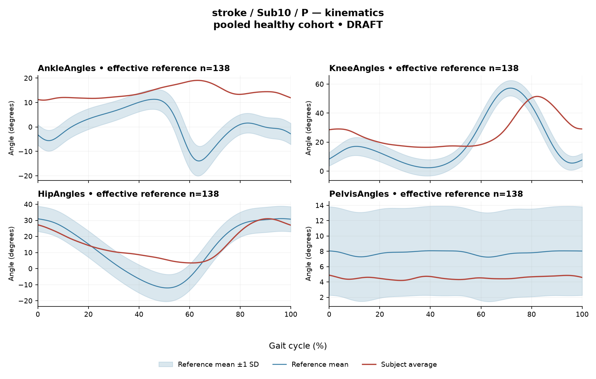

rater2 / Report 104 of 105 / Review spreadsheet row 105
R18C0D9D4DF5C8281
Case: stroke_Sub10_P
Read this report independently. Record judgments in the workbook. Browser pages do not save ratings.
Report: exact saved text
# Gait Report — Limited-Evidence Interpretation **Subject:** Sub10_P **Group:** stroke **Side analyzed:** paretic **Interpretation version:** limited-evidence-v3.1-candidate **Scope:** Research interpretation of supplied quantitative summary only. Not a diagnosis, not a treatment recommendation. --- ## 1. Objective Findings **Supplied spatiotemporal values** - Gait speed 0.24 m/s, which falls in the "household ambulator (<0.4 m/s)" band. This label denotes a speed band only; it does not measure walking independence, safety, or community mobility, none of which are supplied here. - Cadence 72.2 steps/min. - Step length symmetry index +16.3%, computed with the **successive-footfall** definition. Under the stated sign convention (negative = paretic step shorter), this positive value indicates the paretic step is the **longer** of the two by this index. The dataset documents that the instantaneous-heel definition yields a different value for some subjects; only the successive-footfall value is supplied here, so the magnitude should not be treated as definition-independent. - Composite kinematic deviation score (GPS-like) 12.34. **Cycle definition and event information** The analysis cycle runs from one initial contact of the paretic limb (0%) to the next initial contact of the same limb (100%); these are successive occurrences, not a single instant. **No intermediate events are supplied in this input** — no individual toe-off, no stance/swing boundary, no phase markers. All timing below is therefore expressed as percent of the analysis cycle only. No percentage in this report should be read as loading response, mid-stance, pre-swing, push-off, clearance, or weight acceptance, and no conventional 60% stance/swing split is applied. **Reference used** Kinematic deviation is referenced to 138 pooled healthy subjects (1001 phase points, main_cohort_excel); EMG z-statistics are referenced to the healthy cohort described in the metric definitions (effective n ≈ 106–109 per muscle). The reference pools both body sides and all ages and is **not age- or speed-matched to this subject**. Critically, this subject's speed of 0.24 m/s lies well below the healthy reference cohort's self-selected speed floor of 0.80 m/s, so **no speed-matched healthy comparison exists in this dataset**. Every deviation reported below conflates slow-walking effects with stroke-related control changes, and these cannot be separated from these data. Deviation from this reference does not by itself establish a disease effect, a severity grade, or a clinical diagnosis. **Channels available vs. not supplied** - Available: sagittal kinematics for ankle, knee, hip, pelvis; ensemble-averaged EMG envelopes for GAS, RF, VL, BF, ST, TA, ERS on the paretic side; two CCI pairs. - Not supplied in this input: coronal and transverse plane kinematics (sagittal only by design); non-paretic-side EMG (and note the release's normalization denominator is participant-, side-, and muscle-specific, so cross-side amplitude comparison would not be valid even if supplied); individual gait events; stride-level variability; raw-signal quality checks; age, sex, time post-stroke, and stroke clinical scores. These are *not supplied here*; that is distinct from being documented as absent recordings in the source release. --- ## 2. EMG Envelope and Threshold Findings All statements below are properties of the **ensemble-averaged envelope** under the stated rule: above-threshold = exceeding 20% of that same curve's own peak, minimum retained interval 3% of the cycle. Detected intervals are not physiological onsets, offsets, contraction durations, or evidence of inactivity outside the intervals, and a mean-curve pattern does not imply the same pattern in every individual stride. Amplitudes are relative envelope values normalized within participant/side/muscle; they are **not** force, strength, or neural drive, and muscles must not be ranked against one another on this basis. | Muscle | Retained interval(s) (% cycle) | Reported coverage | Peak norm. amp. | Max \|z\| (location, direction) | |---|---|---|---|---| | GAS | 0%–100% | 100% | 0.31 | 10.6 above reference @ 58% | | RF | 68–72; 72–81; 95–61 (wraps) | 79% | 0.74 | 8.2 above reference @ 37% | | VL | 94–52 (wraps) | 59% | 0.62 | 5.7 above reference @ 28% | | BF | 0%–100% | 100% | 0.34 | 3.0 above reference @ 52% | | ST | 42–74; 80–34 (wraps) | 89% | 0.38 | 1.5 **below** reference @ 96% | | TA | 56–46 (wraps) | 90% | 0.61 | 3.8 above reference @ 11% | | ERS | 0%–100% | 100% | 0.58 | 6.5 above reference @ 82% | **Coverage and boundary continuity.** Every recorded muscle's averaged envelope is reported as above threshold across the cycle-defining boundary (continuity from the 100% end into the 0% end at the mean-curve level). GAS, BF and ERS are reported at 100% coverage with a single 0%–100% interval; RF, VL, ST and TA show high but sub-total coverage (79%, 59%, 89%, 90%), meaning below-threshold portions of the averaged curve exist for those four. For GAS, BF and ERS, the coverage value as displayed is rounded, so I do not assert that *no* below-threshold sample exists — only that none was retained under the threshold-plus-duration rule as reported. An onset written as 0% is the analysis-window boundary, not a physiological onset. RF's listing contains adjacent/overlapping segments (68–72, 72–81) within the broader wrapping interval (95–61); this is a property of the segmentation output as supplied, not a separate physiological event. **Standardized differences.** Max |z| is an extreme-value statistic over 1001 phase points, so the conventional 2-SD rule does not apply: in this dataset every one of 109 healthy controls exceeds |z| = 2 on at least one muscle. Per-muscle healthy 95th percentiles for this statistic span 3.65 (ERS) to 4.61 (TA), higher still under leave-one-out, and only these two endpoint values are individually identified. - GAS (10.6), RF (8.2) and VL (5.7) exceed the upper end of that stated range (4.61), so they exceed the healthy 95th percentile whichever muscle-specific value applies. - ERS (6.5) exceeds its own stated 95th percentile (3.65). - TA (3.8) is **below** its stated 95th percentile (4.61). - BF (3.0) and ST (1.5) fall below the lower end of the range (3.65), so they are below whichever muscle-specific percentile applies. Exceeding a pooled calibration percentile is not the same as exceeding a matched leave-one-out normal limit, and does not establish abnormality, pathology, or a disease effect — particularly with no speed-matched reference available. **Location of maximum |z|.** Each stated percentage marks the largest standardized difference from the phase-specific reference mean, not the time of peak envelope amplitude and not a gait event. "Above reference" means above the reference mean at that phase point; "below reference" (ST at 96%) means below the reference mean at that phase point. Neither statement is relative to a healthy percentile limit. **Co-contraction indices.** CCI here is the Falconer–Winter whole-cycle overlap index of the two normalized envelopes (2×common area / summed areas). It is not simultaneous activation time, not force, and not phase-specific; it can be non-zero even when detected bursts do not overlap, since sub-threshold envelope area contributes. It is method-dependent, so values and thresholds from other studies or algorithms do not transfer. - **TA vs GAS = 0.59**, which sits exactly at the upper endpoint of the supplied healthy interval (2.5th–97.5th pct 0.24–0.59; median 0.39) — above the median and at the interval's upper boundary. Because this is a displayed, rounded value at a boundary, I do not classify the hidden unrounded value as inside or outside. - **RF vs BF = 0.63**, inside the supplied healthy interval (0.48–0.83) and below the healthy median of 0.68. Being inside the interval does not establish physiologically normal co-activation or normal muscle function; being at or outside it would not establish pathological co-activation, stiffness, impaired motor control, or any diagnosis. --- ## 3. Kinematic and Reference Comparisons All kinematics are **sagittal plane only**; coronal and transverse motion is not included and cannot be commented on. | Channel | Sagittal ROM | Gait Variable Score | |---|---|---| | Ankle | 8.1° | 15.60 | | Knee | 35.1° | 16.70 | | Hip | 27.5° | 8.71 | | Pelvis | 0.7° | 3.27 | **Composite (GPS-like) = 12.34.** This is the RMS of the four sagittal GVS values above — not the validated 9-variable GPS — so it is not interchangeable with published GPS values. Relative to the supplied composite reference (median 5.1, 95th percentile 10.7), this subject's value is above both. That is a summary magnitude of difference from the pooled reference; it does not localize which part of the waveform differs, in which direction, or at which phase, and it does not establish disease effect or severity. The reference percentile is a pooled calibration figure, not a matched leave-one-out normal limit, and with gait speed at 0.24 m/s there is no speed-matched comparison available at all. **Per-joint pattern as supplied.** The two largest GVS contributions are knee (16.70) and ankle (15.60), with hip intermediate (8.71) and pelvis smallest (3.27). GVS summarizes the difference from the reference mean waveform across the cycle; it does not indicate direction (e.g., more flexed vs. more extended) or the phase at which the difference occurs. **ROM values.** Ankle sagittal ROM of 8.1° and pelvic sagittal ROM of 0.7° are small in absolute terms, but ROM alone, without an appropriate matched comparison, does not establish a clinical restriction — no ROM-specific reference limits are supplied, and the available reference is neither speed- nor age-matched. The very small pelvic sagittal excursion is noted as a numerical observation; whether it reflects the participant's movement, the model/marker configuration, or the reference-frame definition cannot be determined from this input. --- ## 4. Questions for Further Clinical Assessment These are open questions raised by the supplied summary. None presupposes that the mechanism or measurement issue in question has been observed, and none implies a treatment plan. 1. **Event data.** Can individual toe-off and other gait events for this subject's paretic cycles be retrieved from the release, so that envelope intervals can be related to stance/swing subdivisions rather than to cycle percentages alone? 2. **Speed-comparability strategy.** Given that no healthy reference at 0.24 m/s exists in this dataset, is there an alternative slow-speed reference set, or a within-subject repeated-measures design, that could separate slow-walking effects from stroke-related control differences? 3. **Stride-level behaviour.** Are per-stride envelopes and stride counts available? The supplied averaged curves cannot indicate stride-to-stride consistency, and the continuous above-threshold coverage seen on GAS, BF and ERS at the mean level may or may not be present in each stride. 4. **Signal quality.** Have raw-signal checks (baseline offset, movement artefact, ECG contamination for ERS, crosstalk between adjacent channels) been performed for this recording? High fractional coverage combined with a within-curve percentage-of-own-peak threshold can arise from either broad envelope activity or an elevated baseline, and these data cannot distinguish them. 5. **Pelvic kinematics.** Is the 0.7° sagittal pelvic ROM consistent with the marker set, model definition and static calibration used for this session, and is the same value reproducible across trials? 6. **Step-length definition.** Would the instantaneous-heel definition change the +16.3% symmetry value for this subject, and which definition is preferred for the intended comparison? 7. **Contralateral and clinical context.** Are non-paretic-side kinematics and EMG, plus age, sex, time post-stroke and clinical scores, available in the release for this participant? Note that any cross-side EMG amplitude comparison would be limited by the side-specific normalization denominator. 8. **Analysis-pipeline context.** For reproducibility, should this subject's channels be checked against the 614 evaluable / 86 non-evaluable combination audit to confirm all seven muscles here were among the evaluable set? *All interpretations above are constrained to the supplied mean-curve metrics, detected intervals and reference summaries. No statement here establishes normal or abnormal physiology, a disease effect, or a clinical diagnosis.*
Requirements for this report
Fill the corresponding Coverage rows in the workbook. G03 is included once. These are the approved requirements, not prefilled judgments.
| Excel row | ID | Required content | Components / optional content |
|---|---|---|---|
| 542 | R019 | Describe walking speed 0.24 m/s and that it is below the stated 0.80 m/s reference floor; no reference at this speed is supplied. | AND: displayed speed and that it lies below the 0.80 m/s reference floor, so no speed-supported healthy reference exists in this dataset. Optional: cadence, speed-band label (not a functional claim). One sentence may also serve the comparability half of G03. |
| 543 | R020 | Identify knee AND ankle as the principal sagittal GVS differences, without requiring their exact ordering. Exact GVS values are optional; identify the findings as reference-relative sagittal summary differences. | AND: knee AND ankle, no order. Stating which joint is larger is optional; asserting the reverse order is an error. Exact GVS values are optional; no waveform direction, phase or restriction is required. Ankle ROM 8.1 may be reported as a measurement only. |
| 544 | R021 | Describe GAS envelope above its phase-specific reference mean at approximately 58% of the analysis cycle (displayed max |z| 10.6). Within each route, muscle identity AND mean-relative direction AND approximate cycle location are required. Exact max-|z| repetition is optional. | Required for each route: muscle identity AND direction relative to the phase-specific reference mean AND approximate cycle location. Optional: exact max |z| value, comparison with the supplied endpoint span (descriptive only). Prohibited: percentile classification, gait phase, physiological onset, severity. |
| 545 | R022 | Describe RF envelope above its phase-specific reference mean at approximately 37% of the analysis cycle (displayed max |z| 8.2). Within each route, muscle identity AND mean-relative direction AND approximate cycle location are required. Exact max-|z| repetition is optional. | Required for each route: muscle identity AND direction relative to the phase-specific reference mean AND approximate cycle location. Optional: exact max |z| value, comparison with the supplied endpoint span (descriptive only). Prohibited: percentile classification, gait phase, physiological onset, severity. |
| 546 | R024 | Describe the supplied successive-footfall step-length index 16.3% and its meaning: the paretic step is longer. | AND: displayed index and the direction supported by its sign. Optional: formula, definition wording. Acceptable phrasing for small displayed values: "a small difference with the paretic step slightly shorter/longer" (not a cutoff). Prohibited: restating the index as a percentage shortening (E01), severity grades, whole-gait symmetry generalization (E07 issue, not an omission). |
| 547 | G03 | Express a meaningful limitation of reference comparability AND why the comparison cannot establish disease effects or clinical diagnosis; for controls it cannot establish disease or overall normality. One statement may also support a case requirement. | AND: comparability and inference limitations |
Exact model input: system instruction
Draft a research gait-report interpretation for a physical therapist or physiatrist using only the supplied quantitative summary. This is a limited-evidence interpretation task, not diagnosis or treatment selection. Rules: - Describe the participant's actual group and side, available findings, and missing channels accurately. Healthy-group membership does not prove normal physiology; deviations from an empirical reference do not by themselves establish disease. - Treat detected EMG intervals and coverage as properties of an averaged envelope under the stated threshold and duration rule. Do not convert them into physiological onset, offset, duration, continuous contraction, or inactivity outside the intervals. You may describe reported coverage, retained intervals and boundary continuity at the mean-envelope level. Do not infer the same pattern in every individual stride. Say no below-threshold segment only when the supplied evidence establishes that; a rounded coverage value or no retained interval alone does not establish it. - Individual toe-off and matched muscle-specific timing references are not supplied in this task. Use percentages of the analysis cycle. When the input explicitly identifies an initial-contact boundary, you may name that boundary or describe numerical proximity to it. Do not assign stance/swing, loading response, pre-swing, mid-stance or another event to a percentage, or substitute a conventional 60% split. Anatomical muscle actions may be named, but do not map an interval to a gait-phase function such as clearance, push-off or weight acceptance. Do not characterize timing as normal, early, delayed or prolonged without the required evidence. - Respect the supplied normalization method. Relative envelope amplitude is not strength or force, and average curves do not establish stride-to-stride variability. - Report CCI as a whole-cycle overlap index of normalized EMG envelopes. You may compare it with the supplied empirical interval or a supplied median, including proximity to an endpoint. Do not invent an unavailable median. Being within that interval does not establish physiologically normal co-activation or normal muscle function; being outside it does not establish pathological co-activation, stiffness, impaired control or a diagnosis. CCI is not simultaneous activation time, muscular force or a phase-specific result. It depends on normalization and envelope methods; do not transfer values or thresholds from other studies or algorithms. - Describe GVS and GPS-like as summary differences from the stated reference. Neither localizes waveform direction or phase; ROM alone does not establish a clinical restriction without an appropriate comparison. Do not treat pooled calibration percentiles as matched leave-one-out normal limits. - Where using a reference comparison, convey both limited comparability and the inability to establish a disease effect or clinical diagnosis from that comparison. One clear explanation per report is enough; age and speed need not be recited as separate checklist words. A speed inside an overall range does not prove that an appropriate matched reference exists. Apply these limits to controls as well. - The location of maximum |z| is the largest standardized difference from the reference, not necessarily the time of peak envelope amplitude or a gait event. Above/below reference in an EMG row means relative to the phase-specific reference mean at that location, not relative to a healthy percentile limit. - Preserve numerical direction and the displayed precision. Do not invent values, clinical severity grades, statistical significance, or unavailable reference values. Descriptive comparisons with supplied values remain allowed. Near-boundary rounded values do not justify classifying hidden unrounded values. - Clinical follow-up questions may ask whether a mechanism or measurement issue exists; do not presuppose it has already been observed. Do not recommend treatment. If EMG is unavailable, section 2 may simply state that envelope timing, amplitude and CCI cannot be assessed. Reference-only plots do not provide patient EMG. Use exactly these four sections: 1. Objective Findings 2. EMG Envelope and Threshold Findings 3. Kinematic and Reference Comparisons 4. Questions for Further Clinical Assessment
Exact model input: case summary
Candidate interpretation version: limited-evidence-v3.1-candidate
Draft the four-section report using only this subject's supplied evidence.
Metric definitions (read before interpreting any number below):
- All joint angles and ROM values are SAGITTAL PLANE only. Coronal/transverse data are not included.
- The released EMG curves are ensemble-averaged envelopes. For each participant and recorded muscle, normalization uses a shared maximum across the available strides before averaging; individual strides are not independently rescaled to their own peaks. This pipeline uses the released mean curves without further amplitude normalization. In the checked stroke release, the denominator is participant-, side-, and muscle-specific; it is not shared between sides. The local array audit verified 614 evaluable combinations, not all 700; 86 lacked valid nonzero paired samples. Amplitudes are relative envelope values, not absolute neural activation, force, or strength. Do not rank muscles as stronger or weaker from these amplitudes, or infer stride-to-stride variability from an average curve.
- Above-threshold intervals are the regions where the averaged envelope exceeds 20% of that curve's own peak, minimum retained interval 3% of the cycle (by sample count). An interval written as (X%-Y%) with X > Y wraps across the 100%->0% cycle boundary (envelope remains above threshold across the cycle-defining event). An onset of 0% is the analysis-window boundary, not necessarily a physiological onset. "No interval detected" means no region met the threshold + duration criteria; it does NOT mean the muscle is inactive or non-functional.
- CCI is the Falconer-Winter co-contraction index computed on the full continuous envelopes (2*common area / summed areas), so it can be non-zero even when the DETECTED burst intervals of the pair do not overlap (sub-threshold activity contributes).
- The composite kinematic deviation score is the RMS of the per-joint Gait Variable Scores over the sagittal channels provided ("GPS-like", not the validated 9-variable GPS).
- Step length symmetry index: 200*(paretic - non-paretic)/(paretic + non-paretic), in %. NEGATIVE means the paretic-side step is SHORTER. Two operational step-length definitions exist (successive-footfall: each heel's position at its own initial contact; instantaneous: both heels at the same instant) and give different values for some subjects -- the definition actually used is stated next to the symmetry value.
- "Max |z| deviation" is the LARGEST absolute z-score across all 1001 phase points of the cycle, comparing this curve to the healthy-cohort mean/SD at each phase. This is an extreme-value statistic, NOT a single-observation z-score: in this dataset every one of 109 healthy controls exceeds |z| = 2 on at least one muscle, and per-muscle healthy 95th percentiles for this statistic run 3.65 (ERS) to 4.61 (TA) -- higher still under leave-one-out. Do not label a value abnormal by the conventional 2-SD rule; use the healthy reference range given per muscle where provided.
- Healthy-cohort CCI reference (this dataset): RF-vs-BF median 0.68 (2.5th-97.5th pct 0.48-0.83); TA-vs-GAS median 0.39 (0.24-0.59). Composite score reference: median 5.1, 95th percentile 10.7.
- COHORT BACKGROUND (calibration context, not necessarily the exact reference used for this subject -- the actual reference composition is stated in a dedicated line with the subject data below): the full healthy cohort is 138 subjects for kinematics, effective n = 106-109 per muscle for EMG (29 controls have no usable EMG; completeness varies by age), pooling both body sides and all ages; it is not age- or speed-matched to this subject. A leave-one-out run uses one subject fewer than these counts.
- SPEED SUPPORT LIMIT (applies to most stroke subjects in this dataset): the healthy reference cohort's self-selected walking speeds span 0.80-1.79 m/s. If this subject's gait speed is below 0.80 m/s, NO speed-matched healthy reference exists in this dataset -- 41 of the 50 stroke subjects are below that floor. Deviations from the reference then conflate slow-walking effects with stroke-specific control changes, and the two cannot be separated from these data. Describe deviations from the reference as such; do not attribute them wholly to stroke pathology.
- Additional source fields are outside this input. Age, sex and gait events may be available in the release; time post-stroke, stroke clinical scores and a non-paretic-side designation apply only to the stroke cohort, as applicable. Do not claim every listed field exists for every participant. Distinguish not supplied, not applicable and documented absent recordings.
The released paretic-side cycle runs from initial contact of that limb at 0% to its next initial contact at 100%. The cycle boundary may be called initial contact; the endpoints are successive occurrences, not one instant. No intermediate event or phase boundary is supplied.
Model-visible information boundary: the summary contains mean-curve metrics and algorithm-detected intervals, not individual toe-off, matched normal muscle timing, stride-level variability, raw-signal quality checks, or expert plots. Information not supplied here must not be described as absent from the source dataset. Gait-cycle percentages alone do not identify gait phases.
Subject: Sub10_P (group: stroke, affected side: paretic)
Gait speed: 0.24 m/s (household ambulator (<0.4 m/s)) [The ambulation label denotes a speed band only, not measured walking independence, safety or real-world community mobility.]
Cadence: 72.2 steps/min
Step length symmetry index: 16.3% (step-length definition: successive_footfall)
Composite kinematic deviation score (GPS-like): 12.34
Deviation reference actually used for this subject: 138 healthy subjects (pooled), 1001 phase points, source: main_cohort_excel.
EMG envelope findings:
- GAS: above-threshold interval(s) 0%-100%, 100% of cycle above threshold, above threshold across cycle boundary, peak normalized amplitude 0.31, max |z| vs healthy reference: 10.6 (above reference, at 58% of cycle)
- RF: above-threshold interval(s) 68%-72%; 72%-81%; 95%-61% (wraps cycle boundary), 79% of cycle above threshold, above threshold across cycle boundary, peak normalized amplitude 0.74, max |z| vs healthy reference: 8.2 (above reference, at 37% of cycle)
- VL: above-threshold interval(s) 94%-52% (wraps cycle boundary), 59% of cycle above threshold, above threshold across cycle boundary, peak normalized amplitude 0.62, max |z| vs healthy reference: 5.7 (above reference, at 28% of cycle)
- BF: above-threshold interval(s) 0%-100%, 100% of cycle above threshold, above threshold across cycle boundary, peak normalized amplitude 0.34, max |z| vs healthy reference: 3.0 (above reference, at 52% of cycle)
- ST: above-threshold interval(s) 42%-74%; 80%-34% (wraps cycle boundary), 89% of cycle above threshold, above threshold across cycle boundary, peak normalized amplitude 0.38, max |z| vs healthy reference: 1.5 (below reference, at 96% of cycle)
- TA: above-threshold interval(s) 56%-46% (wraps cycle boundary), 90% of cycle above threshold, above threshold across cycle boundary, peak normalized amplitude 0.61, max |z| vs healthy reference: 3.8 (above reference, at 11% of cycle)
- ERS: above-threshold interval(s) 0%-100%, 100% of cycle above threshold, above threshold across cycle boundary, peak normalized amplitude 0.58, max |z| vs healthy reference: 6.5 (above reference, at 82% of cycle)
Co-contraction indices:
- TA_vs_GAS: CCI = 0.59
- RF_vs_BF: CCI = 0.63
Joint kinematic findings (sagittal plane):
- AnkleAngles: range of motion 8.1 deg, Gait Variable Score 15.60
- KneeAngles: range of motion 35.1 deg, Gait Variable Score 16.70
- HipAngles: range of motion 27.5 deg, Gait Variable Score 8.71
- PelvisAngles: range of motion 0.7 deg, Gait Variable Score 3.27Reference context for expert review
# Reference context: stroke/Sub10_P Mean/SD reference: 138 controls; method pooled; exclusions: []. Effective reference counts: GAS=109, RF=108, VL=109, BF=106, ST=108, TA=107, ERS=106, AnkleAngles=138, KneeAngles=138, HipAngles=138, PelvisAngles=138. The exact system and user input files define what the model receives. The EMG and kinematic plots are supplementary expert evidence, not model inputs. The plotted mean plus/minus one SD is descriptive, not a clinical normal band. Negative lower EMG bands can result from mean minus SD; they do not imply negative recorded EMG. The max-|z| p95 span in the input is pooled calibration context. Complete muscle-specific LOO thresholds are not supplied; an appropriately indeterminate classification is allowed. Controls are excluded from their own mean/SD reference, but cohort-level calibration has prior reference-data reuse. It is not an independent matched clinical limit. GPS-like is a four-channel sagittal composite, not the validated nine-variable GPS. The pooled median/p95 background is not a matched LOO normality boundary. CCI uses continuous normalized envelopes over the whole analysis cycle. An empirical interval comparison does not establish normal muscle function. Threshold intervals and rounded coverage describe the averaged envelope. Rounded 100% coverage and one interval do not prove absence of short below-threshold gaps. Use the group-specific cycle and normalization provenance in the actual input. No individual intermediate gait events or matched normal muscle timing are supplied. Administrative age and published bilateral speed are not added to this input. Expert-visible plots do not justify requiring unseen direction, phase or morphology. For a new-case requirement, cite exact input evidence. Select clinically useful descriptive content without inferring a diagnosis or severity from rank alone.
EMG and kinematic curves
The curves are supplementary expert evidence. Only the saved text inputs were supplied to the model; do not require curve-only observations.
EMG

Kinematics
